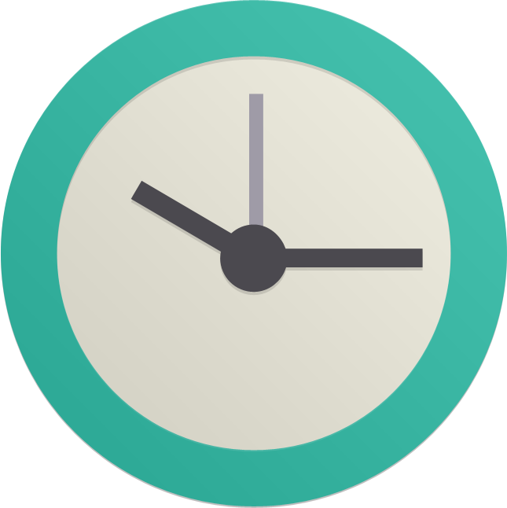
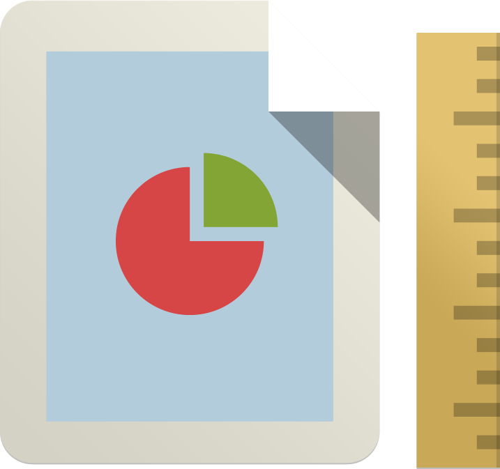

分秒即用
没有任何复杂且不必要的账号注册，安装即用。采用IndexedDB本地存储技术，无需网络服务，离线也可使用。后期将添加Chrome账号同步功能，自动将数据通过Chrome浏览器进行同步。

记住位置
第一款能够记忆滚动条位置的书签应用。在您保存书签的同时保存您的阅读位置。下次打开书签时，自动滚动到上次阅读的位置，无需再上下翻滚寻找上次读到哪里，使您的阅读体验更加流畅。尤其适用于阅读长篇技术文档、网络小说、文章等。
同类覆盖
保存书签的同时允许创建同类列表。下次保存时，将对URL进行分析，若分析结果为同类书签，将覆盖之前保存的书签。适用于您要阅读的一份文档有多个页面，或是跟踪剧集时，每次只保留当前书签，将以前的删除。避免留存大量同类的过往书签。（功能开发中...）